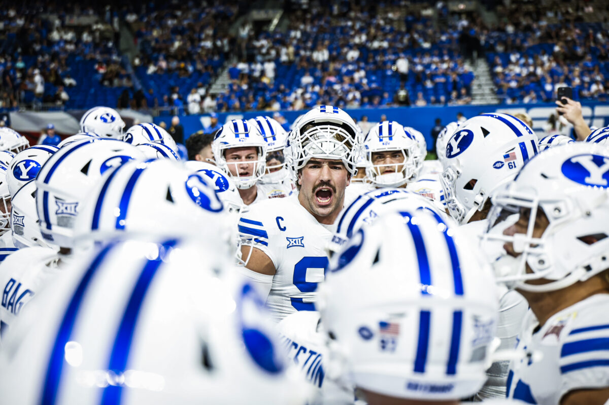

In 1984, the BYU Cougars football team achieved something no one had done before —
and few have matched since. Finishing the season 13–0, BYU was awarded
the UPI National Championship, cementing their place in college football history as the
only school outside the traditional powerhouse conferences to claim an undisputed title
in the modern era.
Head coach LaVell Edwards had built a pass-first, innovative offense
that opponents simply couldn't stop. Quarterback Robbie Bosco led
the charge, throwing for over 3,800 yards on the season despite suffering a serious
ankle injury in the Holiday Bowl — and playing through it anyway to secure the win.
-
Regular Season Dominance
- Went 11–0 heading into bowl season
- Outscored opponents by an average of 22 points per game
- Led the nation in passing offense
-
Holiday Bowl Victory
- Defeated Michigan 24–17 on December 21, 1984
- Bosco played through an ankle injury to lead the comeback
- BYU named #1 in final UPI Poll
-
LaVell Edwards Legacy
- Coach Edwards finished with a 257–101 career record
- Inducted into the College Football Hall of Fame in 2004
- LaVell Edwards Stadium named in his honor

BYU plays at LaVell Edwards Stadium, Provo, Utah — capacity 63,470